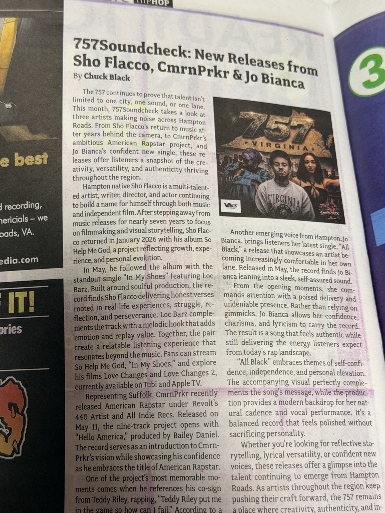

October 2026
Young Crazy, RugerRed#09 & 2K Melo Keep the 757 Moving
Three projects, three approaches: longevity, artistic identity and room for growth in the 757.
View feature & magazine appearanceChecking the sound of the 757. Journalism by Chuck Black.
Explore published coverage of Virginia hip-hop, local releases, artist spotlights and events. Each feature includes its original artwork and a photograph documenting its appearance in VEER Magazine.
Three projects, three approaches: longevity, artistic identity and room for growth in the 757.
View feature & magazine appearancePortsmouth and Norfolk artists connect across generations, battle rap and women-led collaborations.
View feature & magazine appearanceNorfolk artists push forward with new projects, visuals and independent release campaigns.
View feature & magazine appearance
A preview of back-to-back festivals showcasing local performers, national acts and community initiatives.
View feature & magazine appearance
Three Suffolk artists explore lyricism, personal growth, legacy and hometown pride.
View feature & magazine appearance
A look at Sho Flacco’s return, CmrnPrkr’s American Rapstar and Jo Bianca’s All Black.
View feature & magazine appearanceA spotlight on collaborative rap from GMG, 32 Henni’s project and Pretty Loko’s music and visuals.
View feature & magazine appearanceThree distinct releases spanning introspection, fatherhood and emotionally driven music.
View feature & magazine appearanceA look at Virginia hip-hop’s influential legacy, grassroots scenes and independent future.
View feature & magazine appearanceGo beyond the written features with selected 757Soundcheck conversations. Watch five featured interviews here or visit the channel for more.